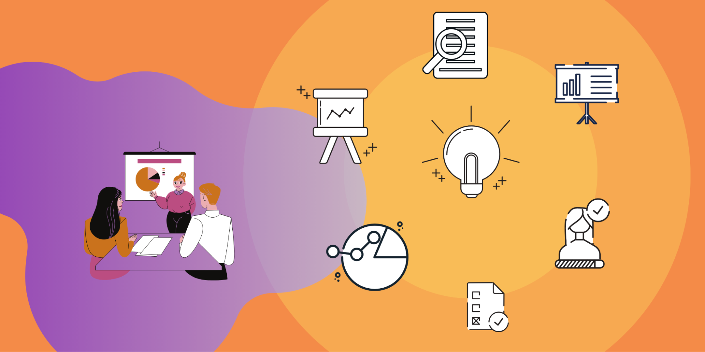

Фінальний проєкт
Фінальний проєкт
Ви вже дізналися про базові типи даних та конструкції Python. Настав час попрацювати над фінальним проєктом курсу та об'єднати здобуті знання.
Ваше завдання — розробити інструмент для стартаперів та інвесторів.

Його можна умовно поділити на етапи, які розглянемо нижче.
1. Розроблення функціоналу для стартаперів
На цьому етапі необхідно реалізувати інтерфейс введення користувачем категорії стартап-проєкту, його ідеї, проблеми, яку має розв'язати його стартап, формування бюджету та планування його витрат.
Після вибору категорії для стартапу необхідно надати відповідні рекомендації щодо напрямів витрат бюджету. Наприклад:
- Якщо обрано категорію «Одяг», бажано витратити бюджет на якісні матеріали та моніторинг моди, на рекламу бренду.
- Якщо ж обрано категорію «Електромобілі», то доцільно витратити бюджет на енергомісткі батареї та економічну електроніку.
Вигадайте самостійно категорії для стартап-проєкту та не забудьте розказати про них користувачеві.
Після заповнення всіх ключових полів виведіть отриману інформацію користувачу на екран.
2. Розроблення функціоналу для інвесторів
Тут необхідно реалізувати інструментарій для вибору користувачем бажаних категорій, рекомендацій, на що звертати увагу в кожній із них та підібрати найстабільніші та найбільші компанії в сегменті.

3. Об'єднання функціоналів
Об'єднайте створені інструменти й реалізуйте відповідні переходи від одного до іншого. Коли користувач запускає програму, надайте йому інструкцію з використання вашого додатку та можливість обирати між функціоналами. Реалізуйте можливості повернення на крок назад та до головного меню, перебуваючи в будь-якому місці програми.
4. Презентація проєкту
Після написання програми попрацюйте над презентацією проєкту. Розкажіть про додаток, з чим виникло найбільше труднощів та ідеї майбутнього вдосконалення.
Крім того, не соромтеся реалізовувати цікаві фічі, які спали вам на думку. Якщо такі є, розкажіть про них.
Успіхів!